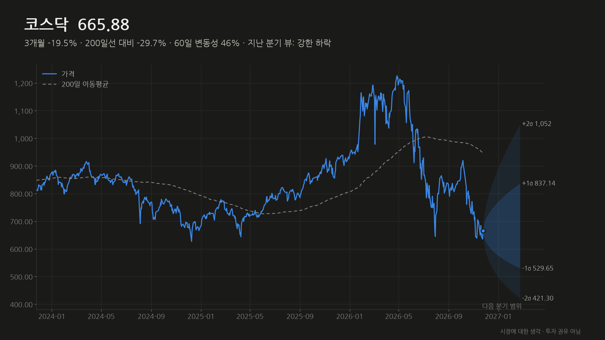
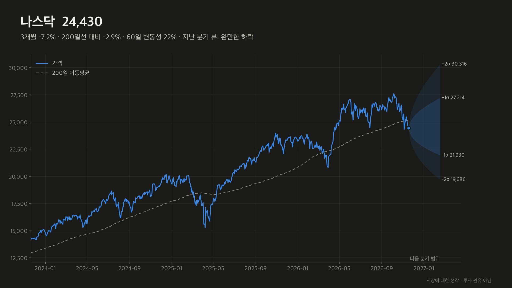
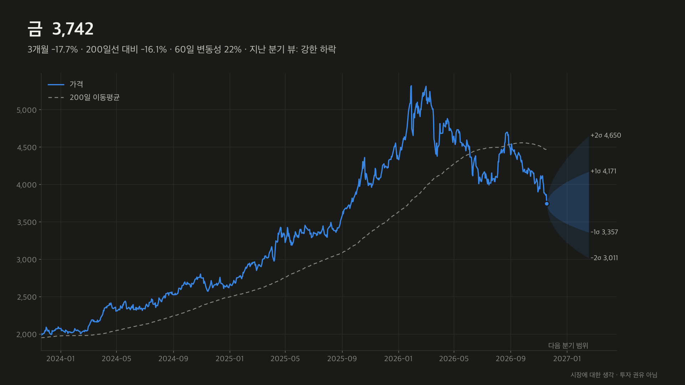

작성일: 2026-11-19 · 만기: 2027-02-18 (91일 후) 기준값: 코스피·코스닥 11-18 종가, 나스닥·비트코인·금 11-17 종가 (모두 독립 출처 대조 완료) 데이터:
journal/snapshot_2026-11-19.md이 글은 개인적인 시장 기록이며 투자 권유가 아닙니다.
들어가며
한 달 전 코스피가 하루에 7.6% 빠졌을 때만 해도 한국만의 문제처럼 보였다. 지금은 아니다. 나스닥 -8.9%, 필라델피아 반도체 -16.7%, 비트코인 -21%. 10월 15일 이후 오른 건 달러와 VIX뿐이다.
그런데 숫자를 하나씩 뜯어보면 이상한 점이 있다. AI 수요를 보여주는 지표는 오히려 좋아졌다. 엔비디아는 가이던스를 넘는 실적을 내고 다음 분기 전망을 올렸고, 한국의 10월 반도체 수출은 역대 최대였다. 가격을 무너뜨린 건 수요가 아니라 인물(엔비디아 CEO 사임), 정책(미국 AI 칩 규제), 금리(연준 인상 재개) 였다.
이번 분기 내 생각은 한 줄이다. 펀더멘털과 가격의 괴리가 가장 큰 곳은 한국 반도체이고, 그 괴리는 다음 분기에 일부 좁혀진다. 다만 금리 인상기에 유동성에 가장 민감한 자산(비트코인, 코스닥)은 아직 바닥이 아니다.
1. 매크로: 지금 어디에 있나

| 축 | 현재 | 10-15 대비 | 한 줄 해석 |
|---|---|---|---|
| 금리 (미 10Y) | 5.12% (10년 분위 99%) | +0.02%p | 명목금리 수준은 그대로, 부담은 여전히 최고 수준 |
| 실질금리 (10Y) | 2.92% (10년 분위 100%) | +0.14%p | 금융 여건은 조용히 더 조여졌다 |
| 기대인플레이션 (10Y) | 2.21% | -0.11%p | 유가 하락과 함께 성장 기대가 내려간다 |
| 정책금리 | 3.75~4.00% | 동결 | 12월 9일 인상이 거의 확실시, 50bp 가능성까지 거론 |
| 달러 (DXY) | 103.49 | +1.5% | 모든 위험자산이 빠질 때 홀로 상승 |
| 유가 (WTI) | 86.01 | -12.2% | IEA가 4분기 공급 과잉 전망 |
| 금 | 3,864.2 | -7.3% | 안전자산이 아니라 금리 자산처럼 움직인다 |
| 신용 (하이일드 스프레드) | 3.43%p (10년 분위 88%) | +0.20%p | 위험 회피가 신용으로 번지기 시작 |
| 변동성 (VIX) | 25.46 | +55% | 11-05 고점 28.18 |
금리 인상기라는 점이 이번 분기의 전제다. 연준은 9월에 이미 금리를 올렸고, 10월 28일 회의는 10대 2로 동결했지만, 10월 근원 CPI가 0.3%로 나오면서 12월 인상은 시장에 거의 다 반영됐다. 월러 이사는 "사람들을 놀라게 할" 50bp 인상까지 언급했다. 한국은행도 11월 26일 3.00%에서 3.25%로 올릴 거라는 전망이 우세하다.
과거 데이터로 보면 이 전제가 중요하다. 2010년 이후 연준 인상 국면에서 200일선 아래에 있던 날의 91일 뒤 성과는 다음과 같다.
| 자산 | 인상 국면 & 200일선 아래 중앙값 | 상승 비율 | 전체 기간 중앙값 |
|---|---|---|---|
| 나스닥 | +3.8% | 65% | +4.8% |
| 코스피 | +0.1% | 50% | +1.5% |
| 코스닥 | +2.6% | 56% | +0.5% |
| 비트코인 | -7.9% | 40% | +8.6% |
| 금 | +4.4% | 71% | +2.0% |
인상 국면에서는 "많이 빠졌으니 반등한다"는 통계가 약해진다. 비트코인은 아예 방향이 뒤집힌다. 금은 반대로 인상 국면에서 오히려 통계가 좋아지는데, 금리 충격으로 빠진 뒤 되돌림이 나온 경우가 많았기 때문이다.
이번 분기 핵심 뉴스와 지표 연결
| 뉴스/이벤트 | 움직이는 지표 | 영향 자산 | 방향 |
|---|---|---|---|
| 젠슨 황 엔비디아 CEO 사임 (11-12) | 엔비디아 주가 (10-06 대비 -35%), 반도체 지수 | 나스닥, 한국 반도체 | 하락 (일회성 지배구조 충격) |
| 미 상무부 AI 칩 수출 규제 (11-16) | 반도체 지수, 외국인 순매도 | 코스피, 나스닥 | 하락 (동남아 데이터센터 투자 지연) |
| 엔비디아 실적 (11-17): 매출 $115.8B, 4Q 가이던스 $130B | AI 수요 | 한국 반도체, 나스닥 | 상승 (수요는 훼손되지 않음) |
| 한국 10월 반도체 수출 +259% (일부 영업일 효과) | 한국 수출 | 코스피 | 상승 |
| 외국인 코스피 순매도 (11/2~6주 10.4조 원) | 수급 | 코스피 | 하락 |
| 연준 12월 인상 기대, 월러 50bp 발언 | 실질금리, 달러 | 비트코인, 코스닥, 나스닥 | 하락 |
| 비트코인 현물 ETF 순유출 (11월 약 20억 달러 이상) | 코인 수급 | 비트코인 | 하락 |
| IEA 공급 과잉 전망 | 유가, 기대인플레이션 | (간접) 금리 기대 | 유가 하락 |
| 중앙은행 금 매입 3분기 321t (전년 대비 +42%), 금 ETF 3분기 211t 유입 | 금 실물 수요 | 금 | 상승 (하단 지지) |
2. 자산별 시각
코스피

- 현재 위치: 5,067.44. 6월 고점 9,114 대비 -44.4%, 200일선 대비 -22.3%. 60일 변동성은 63%(10월)에서 44%로 내려왔다. 11-17에 4,968.48까지 밀렸다.
- 근거
- 데이터: 2010년 이후 코스피가 200일선보다 15% 넘게 아래에 있었던 경우는 독립 에피소드 6번(2011-08, 2018-10, 2020-03, 2022년 세 번)뿐이고, 91일 뒤 중앙값은 +5.9%, 상승 비율은 70%였다. 다만 표본이 작고, 인상 국면만 보면 중앙값이 +0.1%로 내려간다.
- 매크로/뉴스: 하락의 직접 원인은 외국인의 반도체 매도(11월 첫 주에만 삼성전자·SK하이닉스 7.7조 원)다. 그 원인인 CEO 사임과 수출 규제는 수요가 아니라 심리와 정책 문제다. 같은 기간 엔비디아는 가이던스를 올렸고 한국 반도체 수출은 기록을 썼다. 삼성전자는 52주 고점 대비 -45.8%, SK하이닉스는 -60.1%다.
- 걸림돌: 한국은행 인상 가능성, 연준 50bp 시나리오, 아직 확인되지 않은 저점.
- 뷰: 완만한 상승 / 목표 구간: 4,800 ~ 5,900
- 시나리오
- 기본 (55%): 반도체 수출 지표가 유지되고 외국인 매도가 잦아들며 5,300~5,700 근처로 회복.
- 강세 (20%): 연준이 25bp에 그치고 엔비디아 리더십 불확실성이 해소되면 6,000 회복 시도.
- 약세 (25%): 50bp 인상과 외국인 매도 지속으로 4,700 아래로 저점 경신.
- 틀렸다고 인정할 조건: 종가 4,700 하회. 또는 12월 1일 발표될 11월 반도체 수출이 전년 대비 크게 꺾일 때.
코스닥

- 현재 위치: 662.81. 200일선 대비 -30.6%, 52주 고점 대비 -45.9%, 1개월 -18.1%. 11-09 저점 638.97.
- 근거
- 데이터: 200일선 대비 -20% 이하였던 7번의 에피소드에서 91일 뒤 중앙값은 +5.7%, 상승 비율은 78%. 낙폭 과대 통계만 보면 코스피보다 좋다.
- 매크로/뉴스: 그러나 코스닥에는 코스피를 받쳐주는 반도체 수출 같은 펀더멘털 지지대가 약하다. 대신 금리와 유동성에 가장 민감하다. 한국은행과 연준이 동시에 올리는 국면에서는 반등 폭이 제한될 것으로 본다.
- 뷰: 박스권 / 목표 구간: 600 ~ 740
- 시나리오: 기본(55%) 620~720 사이 등락, 강세(20%) 금리 인상 종료 신호와 함께 750 이상, 약세(25%) 600 하회.
- 틀렸다고 인정할 조건: 종가 600 하회, 또는 한국은행이 동결하고 매파 신호를 거둬들이는데도 반등하지 못할 때.
나스닥

- 현재 위치: 24,328.38(11-17). 52주 고점 대비 -11.9%, 200일선 대비 -3.3%. 60일 변동성 22%로 한국보다 훨씬 안정적이다.
- 근거
- 데이터: VIX 25 이상이면서 200일선 아래였던 19번의 에피소드에서 91일 뒤 중앙값은 +6.6%, 상승 비율은 71%. 다만 2022년 인상기의 에피소드는 -7%, -8%, -8%로 대부분 마이너스였다.
- 매크로/뉴스: 엔비디아가 4분기 매출 가이던스 $130B, 내년 성장률 전망 75%로 수요를 확인시켜 줬다. 반면 실질금리는 10년 최고 수준이고 하이일드 스프레드가 벌어지고 있다. 2022년과 다른 점은 이익 전망이 오르고 있다는 것이다.
- 뷰: 완만한 상승 / 목표 구간: 23,500 ~ 27,000
- 시나리오: 기본(55%) 실적이 금리 부담을 상쇄하며 25,000~26,000. 강세(20%) 12월 FOMC 이후 불확실성 해소로 고점 근처 회복. 약세(25%) 50bp와 신용 스프레드 확대로 23,000 아래.
- 틀렸다고 인정할 조건: 종가 23,000 하회, 또는 하이일드 스프레드가 4%p를 넘을 때.
비트코인

- 현재 위치: $64,893.95(11-17). 52주 고점 대비 -33.1%, 200일선 대비 -10.9%. 11-14 저점 $64,128.
- 근거
- 데이터: 인상 국면에서 200일선 아래였던 날의 91일 뒤 중앙값은 -7.9%, 상승 비율 40%. 내가 본 네 자산 중 유일하게 조건부 통계가 마이너스다.
- 나스닥과의 60일 상관이 0.33에서 0.64로 올랐다. 지금 비트코인은 독립 자산이 아니라 레버리지 걸린 위험자산처럼 움직인다.
- 수급: 현물 ETF에서 11월에만 20억 달러 넘게 빠졌고, 주말 사이 약 20억 달러 규모의 강제 청산이 나왔다.
- 뷰: 완만한 하락 / 목표 구간: $50,000 ~ $69,000
- 시나리오: 기본(50%) 12월 인상 후 $55,000~62,000에서 바닥 다지기. 강세(25%) ETF 자금이 다시 유입되며 $70,000 회복. 약세(25%) 나스닥이 함께 무너지면 $50,000 하회.
- 틀렸다고 인정할 조건: 종가 $72,000 회복(200일선 근처), 또는 ETF 순유입이 2주 넘게 이어질 때.
금

- 현재 위치: $3,864.2(11-17, CME 금 선물). 1월 29일 사상 최고(장중 $5,586, 종가 $5,318) 대비 종가 기준 -27.3%, 200일선 대비 -13.4%. 1월 30일 하루에만 -10.8% 급락한 뒤 하락 추세가 이어졌다. 60일 변동성 21%.
- 근거
- 데이터: 금 주간 수익률과 실질금리 변화의 상관은 최근 52주 -0.40으로 2010년 이후 평균(-0.36)보다 강하다. 달러와의 60일 상관도 -0.41. 올해 금은 안전자산이 아니라 실질금리 자산으로 움직였다. 그런데 실질금리가 10년 최고(2.92%)인 지금, 과거 통계는 오히려 반등 쪽이다. 연준 인상 국면에서 200일선 아래였던 날의 91일 뒤 중앙값 +4.4%, 상승 비율 71%. 실질금리가 3개월에 30bp 넘게 오르고 달러도 2% 넘게 오른 국면에서도 +4.0%, 71%.
- 수급: 세계금협회(WGC) 기준 3분기 중앙은행 순매입 321t(전년 대비 +42%), ETF 211t 유입, ETF 보유량 사상 최대 4,256t. 가격이 빠지는 동안 실물 수요는 오히려 늘었다. 하락을 만든 쪽은 선물 시장의 레버리지 청산이다.
- 걸림돌: 12월 인상이 50bp로 나오면 실질금리가 한 번 더 오른다.
- 뷰: 박스권 / 목표 구간: $3,600 ~ $4,150
- 시나리오: 기본(55%) 중앙은행 매입이 하단을, 실질금리가 상단을 막으며 $3,700~4,050에서 등락. 강세(20%) 12월 FOMC가 "마지막 인상" 신호를 주면 $4,200 이상. 약세(25%) 50bp 인상과 달러 강세로 $3,600 하회.
- 틀렸다고 인정할 조건: 종가 $3,600 하회(실질금리 논리가 중앙은행 매입을 압도한 것), 또는 $4,200 상회(내가 반등 폭을 과소평가한 것).
3. 이번 분기 예측 요약
| ID | 자산 | 기준값 | 뷰 | 목표 구간 | 구간 폭 (1σ 대비) | 과거 빈도 (전체) | 과거 빈도 (비슷한 국면) |
|---|---|---|---|---|---|---|---|
| 2026Q4-01 | 코스피 | 5,067.44 | 완만한 상승 | 4,800 ~ 5,900 | 0.49 | 22% | 17% (200일선 -15% 이하) |
| 2026Q4-02 | 코스닥 | 662.81 | 박스권 | 600 ~ 740 | 0.48 | 32% | 29% (200일선 -20% 이하) |
| 2026Q4-03 | 나스닥 | 24,328.38 | 완만한 상승 | 23,500 ~ 27,000 | 0.66 | 30% | 21% (VIX≥25, 200일선 아래) |
| 2026Q4-04 | 비트코인 | 64,893.95 | 완만한 하락 | $50,000 ~ $69,000 | 0.74 | 14% | 22% (VIX≥25, 200일선 아래) |
| 2026Q4-05 | 금 | 3,864.2 | 박스권 | $3,600 ~ $4,150 | 0.68 | 28% | 24% (인상 국면, 200일선 아래) |
* 과거 빈도는 같은 뷰가 91일 뒤에 실제로 나온 비율. 비슷한 국면 표본은 작아서(독립 에피소드 6~29개) 참고용이다. * 구간 폭은 목표 구간 폭 ÷ 기록 시점 다음 분기 1σ 범위 폭. 1보다 작을수록 변동성 대비 좁은(과감한) 구간이다.
채점 (2027-02-18 종가 기준): 점수 = 뷰 점수(적중 1.0, 한 칸 차이 0.5, 그 이상 0) × 50% + 구간 적중 × 50%. 구간 폭은 점수에 넣지 않고 함께 공개한다. 예측은 predictions.csv에 기록했고 이후 수정하지 않는다.

4. 이번 분기 달력
| 날짜 | 이벤트 | 왜 중요한가 |
|---|---|---|
| 11-26 | 한국은행 금통위 | 3.25% 인상 여부. 코스닥 뷰의 핵심 |
| 11-29 | OPEC+ 회의 | 2027년 생산 전략. 유가와 기대인플레이션 |
| 12-01 | 한국 11월 수출입 동향 | 반도체 수출이 유지되는지. 코스피 뷰의 핵심 |
| 12-08~09 | FOMC | 25bp인가 50bp인가. 다섯 자산 모두에 영향. 금은 실질금리 경로가 곧 뷰 |
| 2027-02 중순 | 미 상무부 규제 라이선스 유예(90일) 종료 무렵 | 동남아 데이터센터 투자 차질의 실제 크기 |
| 미정 | 엔비디아 신임 CEO 선임 | 지배구조 불확실성 해소 |
맺으며
가장 확신하는 것: 한국 반도체의 가격은 펀더멘털보다 훨씬 많이 빠졌다. SK하이닉스가 고점 대비 -60%인데, 같은 기간 고객사(엔비디아)는 성장 전망을 올렸다.
가장 자신 없는 것: 연준이 어디까지 올릴지. 50bp가 나오면 위의 다섯 뷰가 모두 한 칸씩 아래로 밀릴 수 있다. 그래서 이번 분기에는 상승 뷰도 "완만한"에 머물렀다.
출처
- 코스피 외국인 매도·서킷브레이커: Seoul Economic Daily, Invezz, MoneyToday
- 젠슨 황 사임: CNBC, CNN
- 엔비디아 3분기 실적: NVIDIA, CNBC
- 미 상무부 AI 칩 규제: Bloomberg, CNBC
- 연준: Yahoo Finance (10월 FOMC), CNBC (월러)
- 한국은행: Econotimes, Kyunghyang
- 한국 10월 수출: Korea Times
- 비트코인 ETF 유출: CoinCentral, CryptoLinks
- 금: World Gold Council Q3 2026 Gold Demand Trends, WGC 10월 코멘터리, Euronews
- 유가: EnergyNow, Offshore Technology
- 가격·지표 데이터: yfinance·FinanceDataReader 수집, 네이버 금융(한국 지수·종목·금 선물)·FRED·바이낸스로 대조